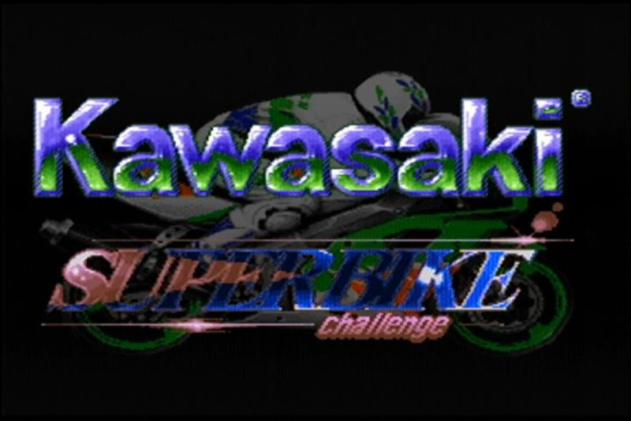
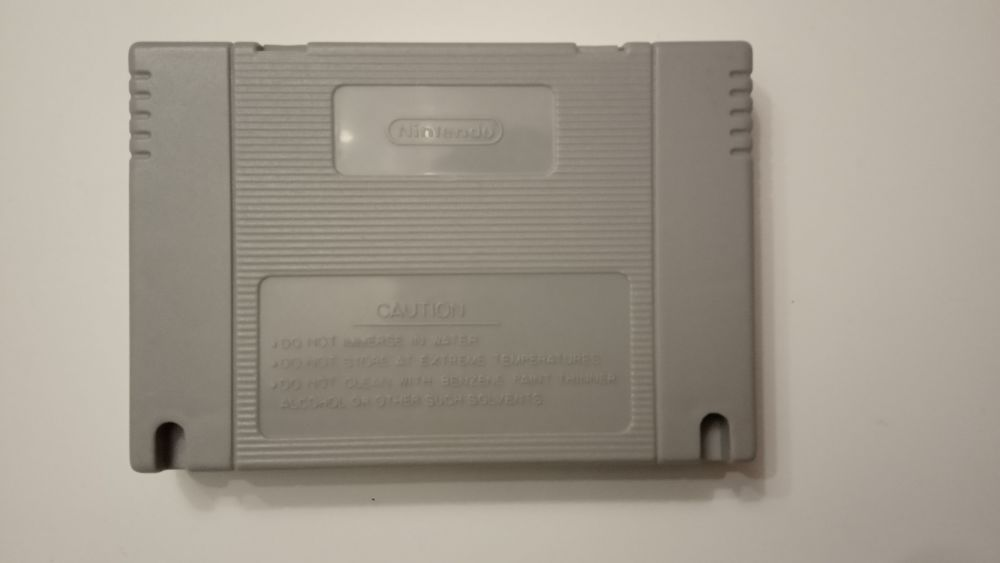
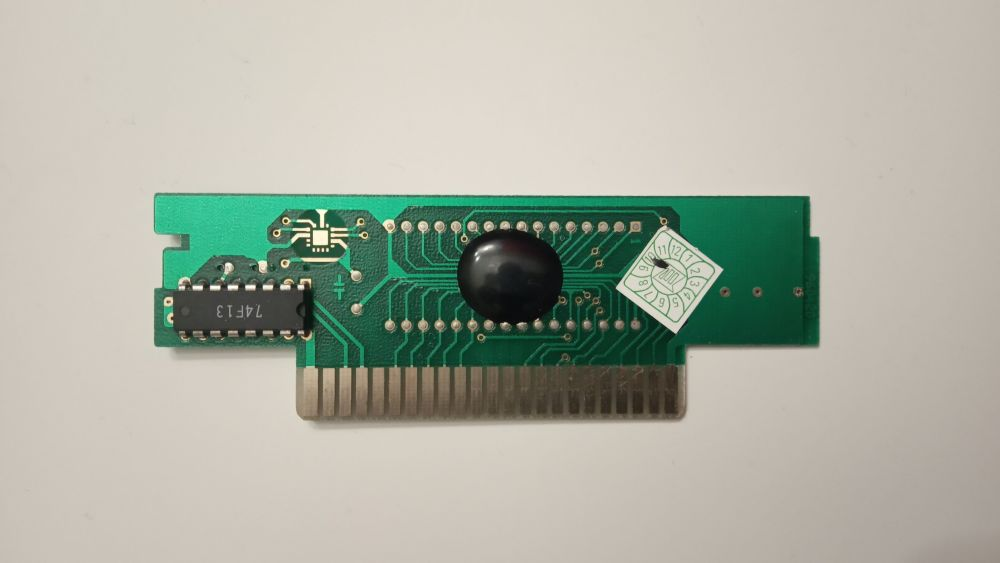
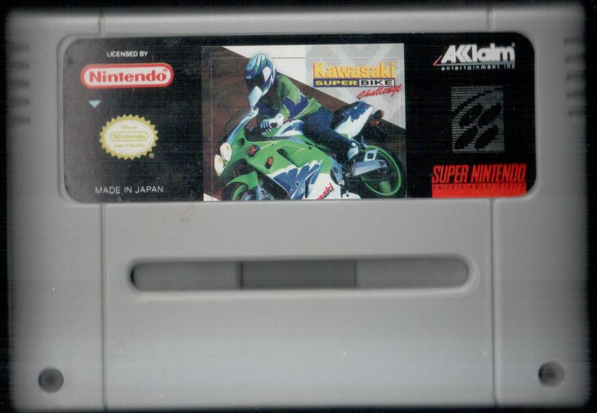
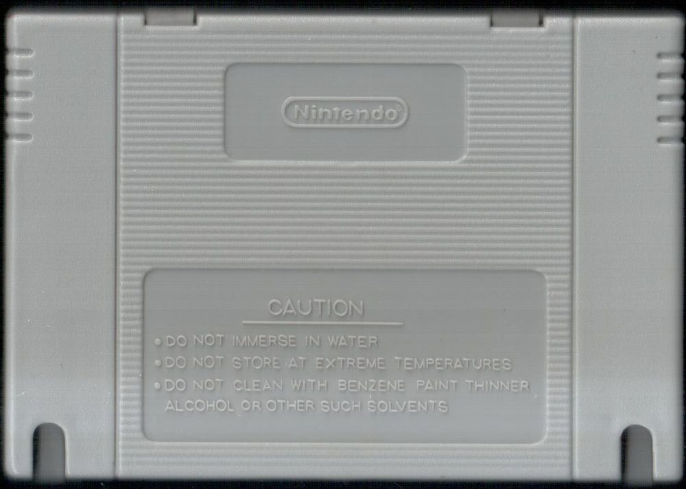
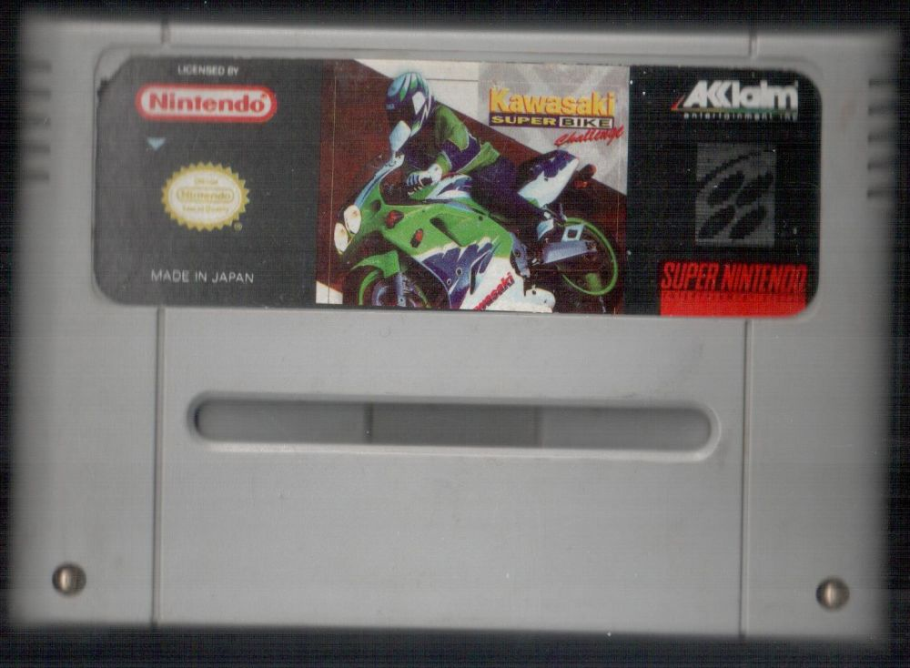
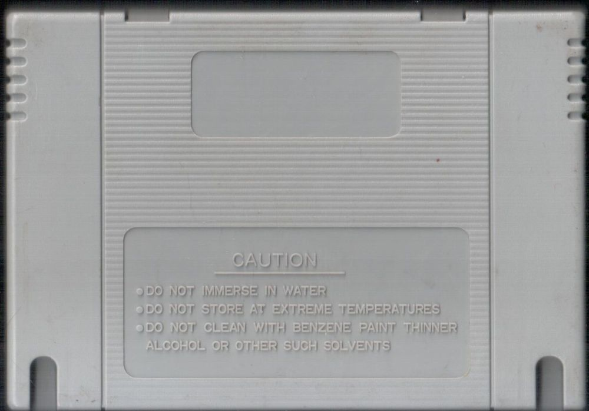
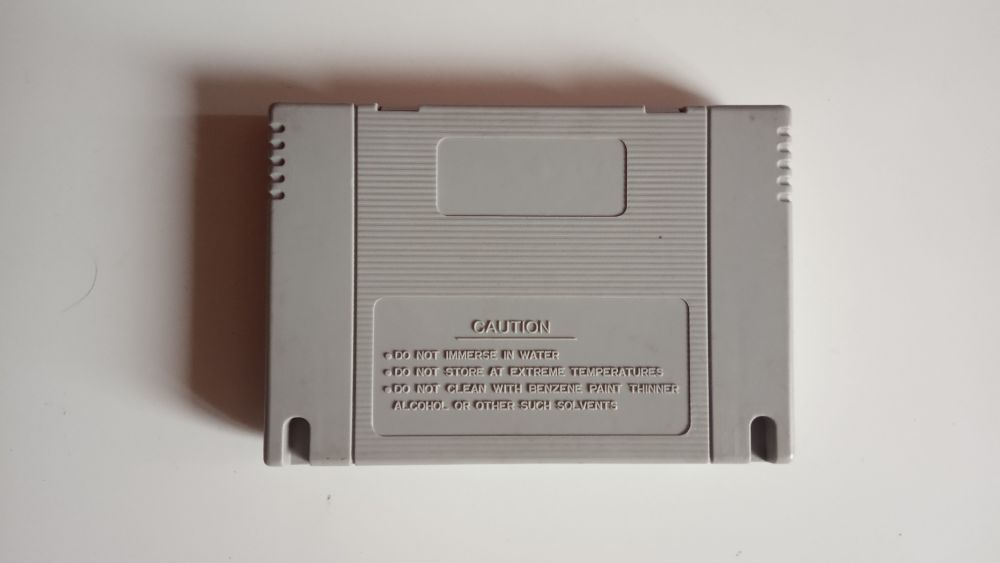
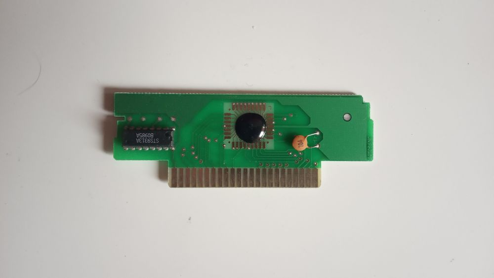

Kawasaki SuperBike Challenge
Разберемся почему пиратский:1) Картинка на картридже как ни странно отличается от официального издания.
2) Логотип Acclaim который никакого отношения не имеет к этой игре.
3) Отличающееся качество пластика.
4) Отсутствие винтов в корпусе.
5) Отличающиеся клейма Нинтендо и предупреждающих надписей сзади.
6) Вырезы вместо отверстий.
7) Плата картриджа, использующая технологию удешевления производства - вместо полноценной ПЗУ микросхемы - кристалл залитый смолой.
Не очень часто встречающаяся пиратская копия игры, известно точно, что существовала такая же в коробчатом издании.
Игра внутри представляет из себя гонку на мотоциклах Кавасаки, отсюда и название, но при этом это гонка от первого лица, что является весьма интересным экспериментом. Я даже посоветую поиграть в эту игру.
Внутри картриджа: Kawasaki SuperBike Challenge.
Дополнительные фото и описание к ним:








